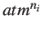
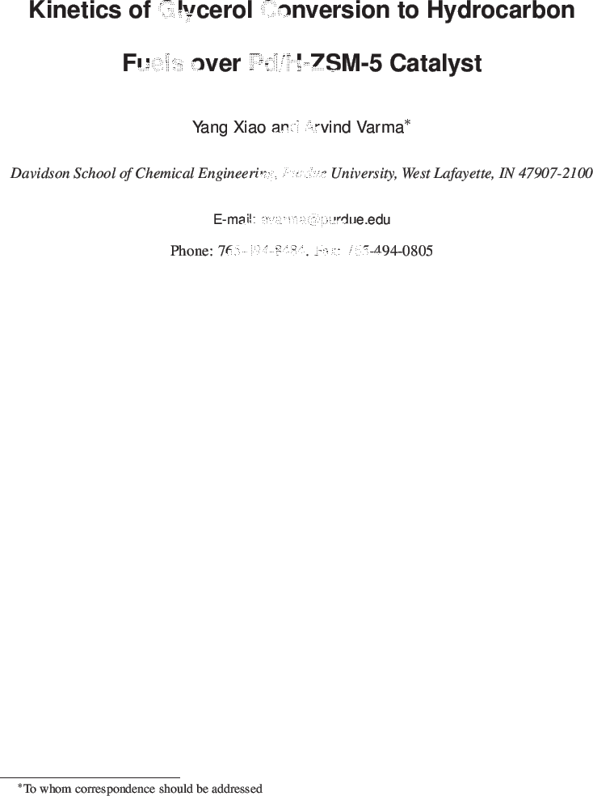

Next: Keywords Up: Kinetics of Glycerol Conversion Previous: Kinetics of Glycerol Conversion
The utilization of glycerol, primary byproduct of biodiesel production, is important to enhance process economics.
In our recent prior work, it was shown that glycerol can be converted to hydrocarbon fuels over bifunctional catalysts,
containing a noble metal supported on H-ZSM-5. Over Pd/H-ZSM-5 catalyst,
an optimal  